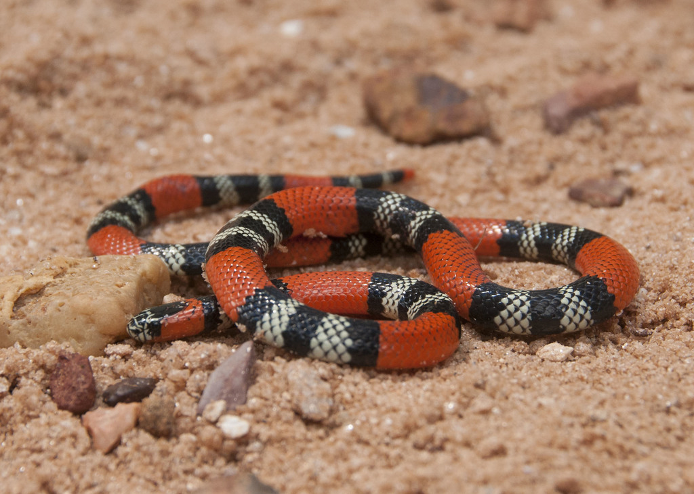

Venom HazardHow dangerous is the venom itself?50.0
Rank
61 of 78
61 of 78
Potency49.1
LD50 of 0.63 mg/kg (SC injection).
Quantity51.0
Up to 30 mg of venom in a single milking.
Southern coral snake ranks 61 of 78 for Venom Hazard and 69 of 91 for Human Risk.

LD50 of 0.63 mg/kg (SC injection).
Up to 30 mg of venom in a single milking.
Rated 3 out of 10. Lives in leaf litter and soil; seldom seen.
Level 2 of 5: Shy or docile; bites mainly if handled or stepped on.
Moderate (6-24 h). Slow onset scores higher because people often delay treatment.
Limited.
An equal average of Venom Hazard and Human Risk. Always read it with the two scores beside it.
Scores are relative to the species on this site. Bars run from 0 to 100. How these scores are built.
Paralysis can progress over several hours once envenomation occurs.
| Measure | Value | Source | Grade |
|---|---|---|---|
| LD50 (mice) | 0.63 mg/kg · SC | Ernst & Zug (1996) compilation (secondary); primary study not traced; route assumed | C |
| Venom yield | 20–30 mg | Ernst & Zug (1996) compilation (secondary); basis not stated; unstated — assumed range across specimens | C |
| Deaths a year | – | No sourced figure yet. |
Built on secondary compilations rather than the original lab studies. The ranking is unlikely to change much, but the exact figures could.
Closest in both Venom Hazard and Human Risk.